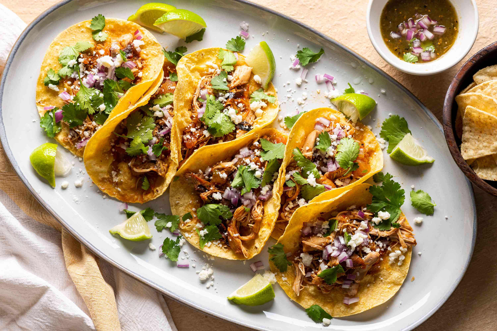

Chicken Tinga Tacos

Description
Chicken tinga is a Mexican stew of chicken, tomato, onion, and chipotle peppers. The dish is savory, smoky, tangy, and as satisfying as any comfort food. It's incredibly versatile and makes a nice filling for tacos, burritos, huaraches, enchiladas, and even nachos. Like most stews, it also keeps well, and may even taste best on the second or third day as the flavors marry.
This recipe calls for a slow cooker, but you can easily make it on a stovetop. Simply cook in a covered pot on the lowest flame until the chicken softens into tender shreds. Don't skip the browning of the chicken or the charring of the tomatoes, as these steps deepen the flavor and bring out the wonderful smoky notes of the chipotle. We like bay leaf with our tinga, but it's good with oregano as well. And though we prefer dried chipotles, you may use canned.
Reference Chicken Tinga Taco Recipe
Ingredients
- 1 1/2 pounds Roma tomatoes
- 1 medium yellow onion
- 4 dried chipotle peppers
- 1 large clove garlic
- 2 bay leaves
- 2 tablespoons neutral cooking oil
- 1 1/2 pounds boneless, skinless chicken thighs
- 1 splash distilled white vinegar
- Salt, to taste
Steps
- Gather the ingredients. Set the oven to broil.
- Place the sliced onions in a cast-iron skillet and put the whole Roma tomatoes on top. Place under the broiler close to the flame. Turn them periodically so that the tomatoes have a light char on all sides.
- Remove from the oven and place the tomatoes and onions into a large bowl. Add the chipotles, chopped garlic, and bay leaves. Toss to combine.
- Put the skillet you used for the tomatoes on the stove over a high flame. Add the oil. When hot but not smoking, add the chicken thighs. If necessary, cook the chicken in batches to avoid overcrowding the pan. To brown well, keep the meat in a single layer and leave undisturbed for a couple of minutes before turning.
- Add the browned (but not cooked through) chicken to a slow cooker. Scrape all the pan juices into the pot as well. Add the tomato, onion, garlic, chipotles, and bay leaves on top. Put the lid on the slow cooker and cook on the low setting for about 6 hours.
- Stir the contents of the crockpot and remove the bay leaves. All the ingredients will be quite soft.
- As you stir, the chicken will shred. You may have to exert a little effort breaking up the tomatoes. Season the stew with a splash of vinegar and salt to taste. Serve immediately.